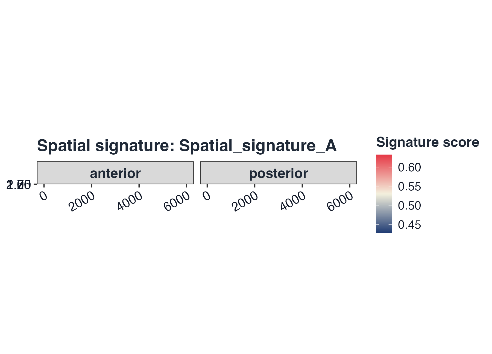
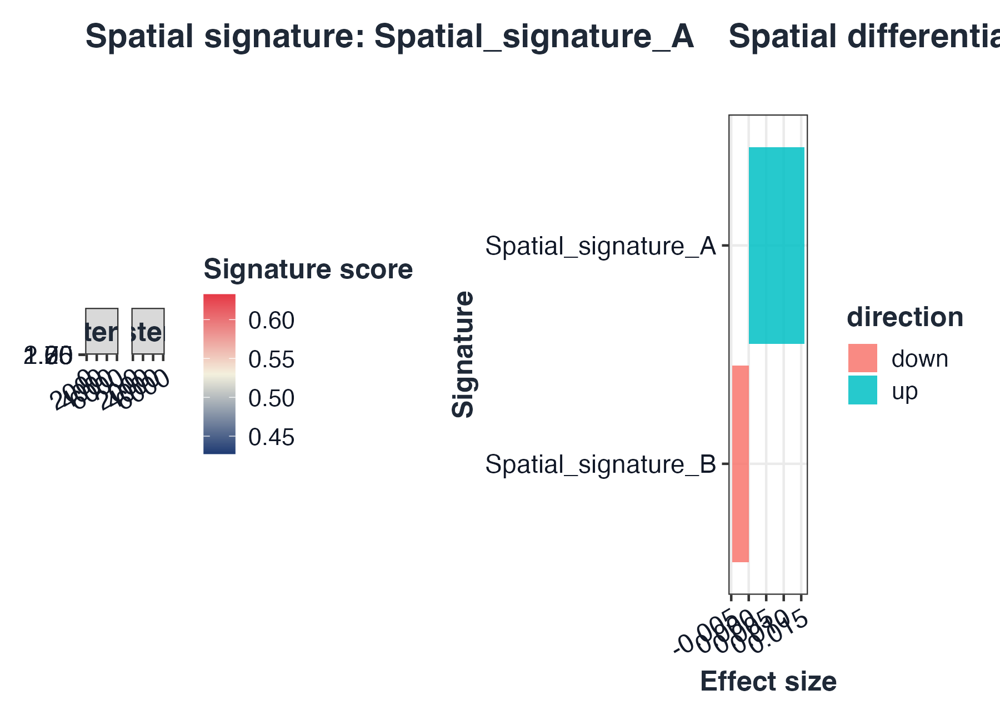

GLEAM quick start: spatial Seurat workflow
Source:vignettes/GLEAM_quickstart_spatial.Rmd
GLEAM_quickstart_spatial.RmdGoal
This quick start demonstrates:
- Spatial Seurat input
- Robust extraction from
stxBrain_anterior1+stxBrain_posterior1without fragile image-slot merge - Signature scoring on combined spatial expression/meta table
- Region/sample-aware differential testing
- Spatial score mapping with explicit slice/tissue context
1) Load/create spatial-capable Seurat object
To avoid Seurat image-slot version breakpoints (VisiumV2
compatibility issues), we load Seurat spatial objects, then combine
expression/metadata at matrix level.
library(Seurat)
#> Loading required package: SeuratObject
#> Loading required package: sp
#>
#> Attaching package: 'SeuratObject'
#> The following object is masked from 'package:GLEAM':
#>
#> pbmc_small
#> The following objects are masked from 'package:base':
#>
#> intersect, t
a1_path <- system.file("extdata", "full_examples", "stxBrain_anterior1_seurat.rds", package = "GLEAM")
p1_path <- system.file("extdata", "full_examples", "stxBrain_posterior1_seurat.rds", package = "GLEAM")
if (a1_path == "") a1_path <- file.path("inst", "extdata", "full_examples", "stxBrain_anterior1_seurat.rds")
if (p1_path == "") p1_path <- file.path("inst", "extdata", "full_examples", "stxBrain_posterior1_seurat.rds")
sp_a1 <- readRDS(a1_path)
sp_p1 <- readRDS(p1_path)
resolve_expr <- function(obj) {
assay_candidates <- unique(c(
tryCatch(SeuratObject::DefaultAssay(obj), error = function(e) NULL),
"Spatial",
"RNA"
))
assay_candidates <- assay_candidates[!is.na(assay_candidates) & nzchar(assay_candidates)]
get_if_nonempty <- function(expr) {
m <- tryCatch(eval.parent(substitute(expr)), error = function(e) NULL)
if (!is.null(m) && nrow(m) > 0L && ncol(m) > 0L) return(m)
NULL
}
for (assay in assay_candidates) {
m <- get_if_nonempty(SeuratObject::LayerData(object = obj, assay = assay, layer = "data"))
if (!is.null(m)) return(m)
m <- get_if_nonempty(SeuratObject::LayerData(object = obj, assay = assay, layer = "counts"))
if (!is.null(m)) return(m)
m <- get_if_nonempty(SeuratObject::GetAssayData(object = obj, assay = assay, slot = "data"))
if (!is.null(m)) return(m)
m <- get_if_nonempty(SeuratObject::GetAssayData(object = obj, assay = assay, slot = "counts"))
if (!is.null(m)) return(m)
}
stop("Failed to extract non-empty expression matrix from Seurat spatial object.")
}
prep_spatial_object <- function(obj, sample_label) {
expr <- resolve_expr(obj)
md <- as.data.frame(obj[[]], stringsAsFactors = FALSE)
if (is.null(rownames(md))) rownames(md) <- colnames(expr)
md <- md[colnames(expr), , drop = FALSE]
if (!"sample" %in% colnames(md)) md$sample <- sample_label
if (!all(c("x", "y") %in% colnames(md))) {
if (all(c("imagecol", "imagerow") %in% colnames(md))) {
md$x <- md$imagecol
md$y <- md$imagerow
} else if (all(c("col", "row") %in% colnames(md))) {
md$x <- md$col
md$y <- md$row
}
}
prefixed_ids <- make.unique(paste0(sample_label, "_", colnames(expr)), sep = "_dup")
colnames(expr) <- prefixed_ids
rownames(md) <- prefixed_ids
list(expr = expr, meta = md)
}
stratified_keep <- function(meta, n_target, strata_candidates = character()) {
if (nrow(meta) <= n_target) return(rownames(meta))
strata <- intersect(strata_candidates, colnames(meta))
all_ids <- rownames(meta)
if (length(strata) == 0L) return(all_ids[seq_len(n_target)])
key <- interaction(meta[, strata, drop = FALSE], drop = TRUE, lex.order = TRUE)
groups <- split(all_ids, key)
per_group <- max(1L, floor(n_target / max(1L, length(groups))))
keep <- unlist(lapply(groups, function(ids) {
ids <- sort(ids)
head(ids, per_group)
}), use.names = FALSE)
if (length(keep) < n_target) {
keep <- c(keep, head(setdiff(all_ids, keep), n_target - length(keep)))
}
unique(keep)[seq_len(min(n_target, length(unique(keep))))]
}
sp1 <- prep_spatial_object(sp_a1, "anterior")
#> Warning: Layer 'data' is empty
sp2 <- prep_spatial_object(sp_p1, "posterior")
#> Warning: Layer 'data' is empty
common_genes <- intersect(rownames(sp1$expr), rownames(sp2$expr))
sp_expr <- cbind(sp1$expr[common_genes, , drop = FALSE], sp2$expr[common_genes, , drop = FALSE])
sp_md <- rbind(sp1$meta[colnames(sp1$expr), , drop = FALSE], sp2$meta[colnames(sp2$expr), , drop = FALSE])
sp_md <- sp_md[colnames(sp_expr), , drop = FALSE]
if (ncol(sp_expr) > 6000) {
keep <- stratified_keep(
meta = sp_md,
n_target = 6000,
strata_candidates = c("sample", "group", "region", "seurat_clusters")
)
sp_expr <- sp_expr[, keep, drop = FALSE]
sp_md <- sp_md[keep, , drop = FALSE]
}
if (!"group" %in% colnames(sp_md)) sp_md$group <- ifelse(grepl("anterior", sp_md$sample, ignore.case = TRUE), "anterior", "posterior")
if (!"region" %in% colnames(sp_md)) sp_md$region <- if ("seurat_clusters" %in% colnames(sp_md)) paste0("cluster_", sp_md$seurat_clusters) else sp_md$group
if (!all(c("x", "y") %in% colnames(sp_md))) {
if (all(c("array_col", "array_row") %in% colnames(sp_md))) {
sp_md$x <- sp_md$array_col
sp_md$y <- sp_md$array_row
} else {
n <- nrow(sp_md)
sp_md$x <- seq_len(n)
sample_vec <- if ("sample" %in% colnames(sp_md)) sp_md$sample else rep("sample_1", n)
sp_md$y <- as.numeric(as.factor(sample_vec))
}
}
# Show object context early
dim(sp_a1); sp_a1
#> [1] 31053 2696
#> An object of class Seurat
#> 31053 features across 2696 samples within 1 assay
#> Active assay: Spatial (31053 features, 0 variable features)
#> 1 layer present: counts
#> 1 spatial field of view present: anterior1
dim(sp_p1); sp_p1
#> [1] 31053 3353
#> An object of class Seurat
#> 31053 features across 3353 samples within 1 assay
#> Active assay: Spatial (31053 features, 0 variable features)
#> 1 layer present: counts
#> 1 spatial field of view present: posterior1
head(sp_md[, intersect(c("sample", "group", "region", "x", "y", "imagecol", "imagerow"), colnames(sp_md))])
#> sample group region x y
#> anterior_AAACAAGTATCTCCCA-1 anterior anterior anterior 1 1
#> anterior_AAACACCAATAACTGC-1 anterior anterior anterior 2 1
#> anterior_AAACAGAGCGACTCCT-1 anterior anterior anterior 3 1
#> anterior_AAACAGCTTTCAGAAG-1 anterior anterior anterior 4 1
#> anterior_AAACAGGGTCTATATT-1 anterior anterior anterior 5 1
#> anterior_AAACATGGTGAGAGGA-1 anterior anterior anterior 6 1
if ("umap" %in% names(sp_a1@reductions)) {
DimPlot(sp_a1, reduction = "umap", group.by = "orig.ident", pt.size = 0.45)
}2) Score signatures
sp_genes <- rownames(sp_expr)
half_n <- max(30, floor(length(sp_genes) / 2))
idx_a <- seq_len(min(half_n, length(sp_genes)))
idx_b <- seq(from = min(half_n + 1, length(sp_genes)), to = length(sp_genes))
gs <- list(
Spatial_signature_A = unique(sp_genes[idx_a])[1:min(30, length(unique(sp_genes[idx_a])))],
Spatial_signature_B = unique(sp_genes[idx_b])[1:min(30, length(unique(sp_genes[idx_b])))]
)
sp <- score_signature(
expr = sp_expr,
meta = sp_md,
geneset = gs,
geneset_source = "list",
seurat = FALSE,
method = "rank",
min_genes = 3
)
#> [GLEAM] matched pathways: 2
#> [GLEAM] median matched genes: 30.0
#> Warning in asMethod(object): sparse->dense coercion: allocating vector of size
#> 1.4 GiB
#> [GLEAM] scoring rank method...3) Spatial score plots (slice + coordinates)
coords <- data.frame(x = sp_md$x, y = sp_md$y, row.names = rownames(sp_md))
# Simulated tissue-like background for slice-context demonstration
tissue_bg <- as.raster(matrix(colorRampPalette(c("#f7f3e8", "#eadfca", "#d9c7a4"))(256), nrow = 16))
p_base <- plot_spatial_score(
sp,
pathway = rownames(sp$score)[1],
coords = coords,
image = tissue_bg,
split.by = "sample"
)
p_base
4) Spatial differential testing
sp_res <- test_signature(
score = sp,
region = "region",
group = "group",
sample = "sample",
level = "sample_region",
method = "wilcox"
)
top_sp <- sp_res$table$pathway[order(sp_res$table$p_adj)][1]
p_region <- plot_spatial_score(sp, pathway = top_sp, coords = coords, image = tissue_bg, split.by = "region")
p_cmp <- plot_spatial_compare(sp_res)
if (requireNamespace("patchwork", quietly = TRUE)) {
p_region + p_cmp + patchwork::plot_layout(ncol = 2)
} else {
p_region
p_cmp
}